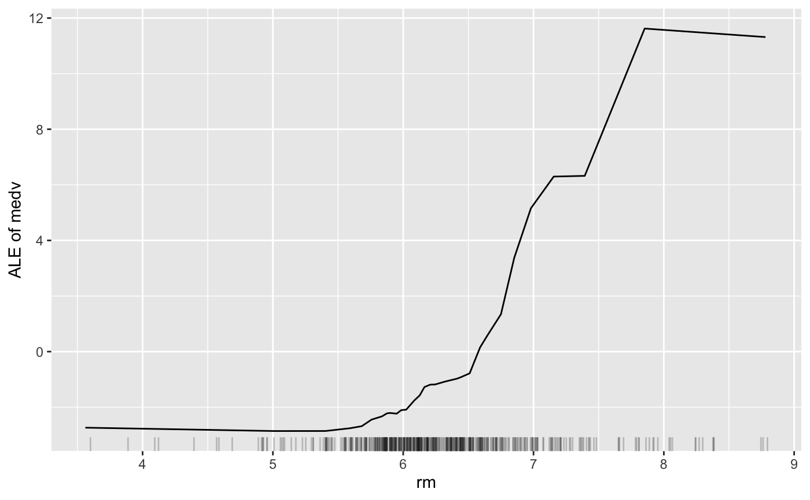
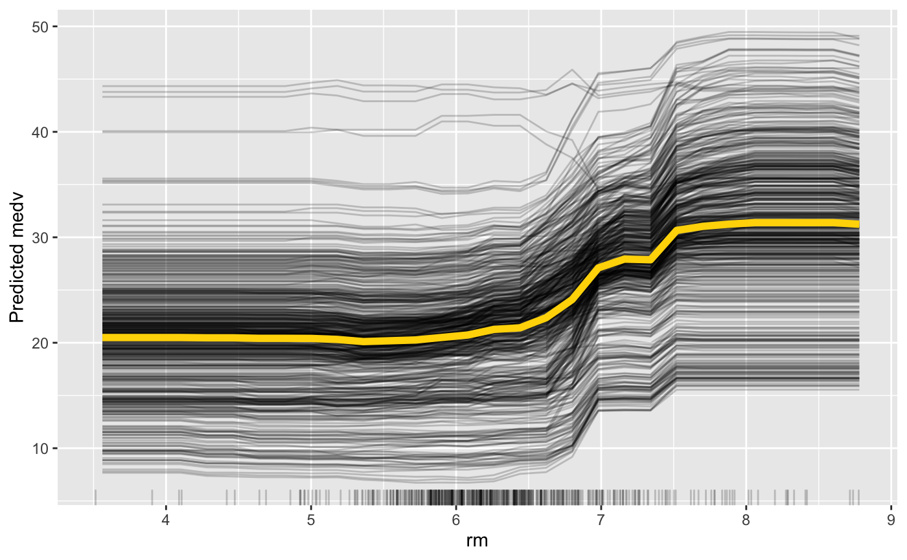
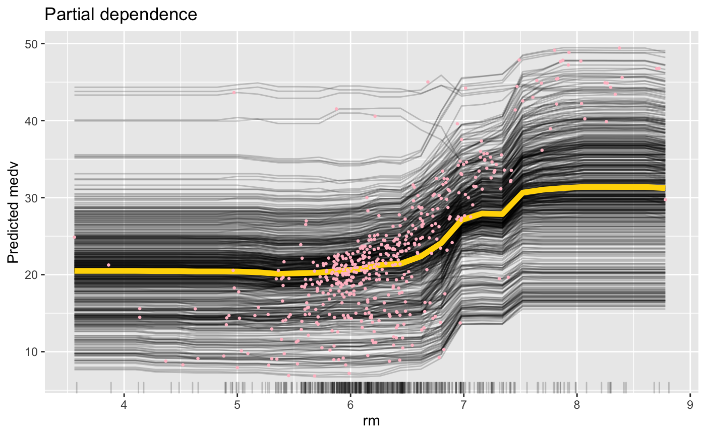
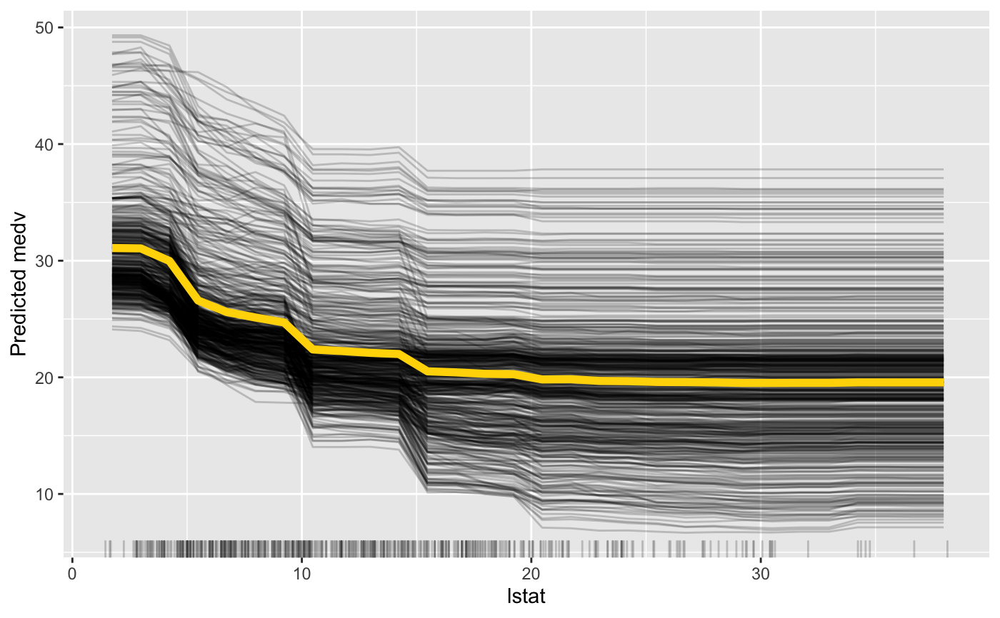
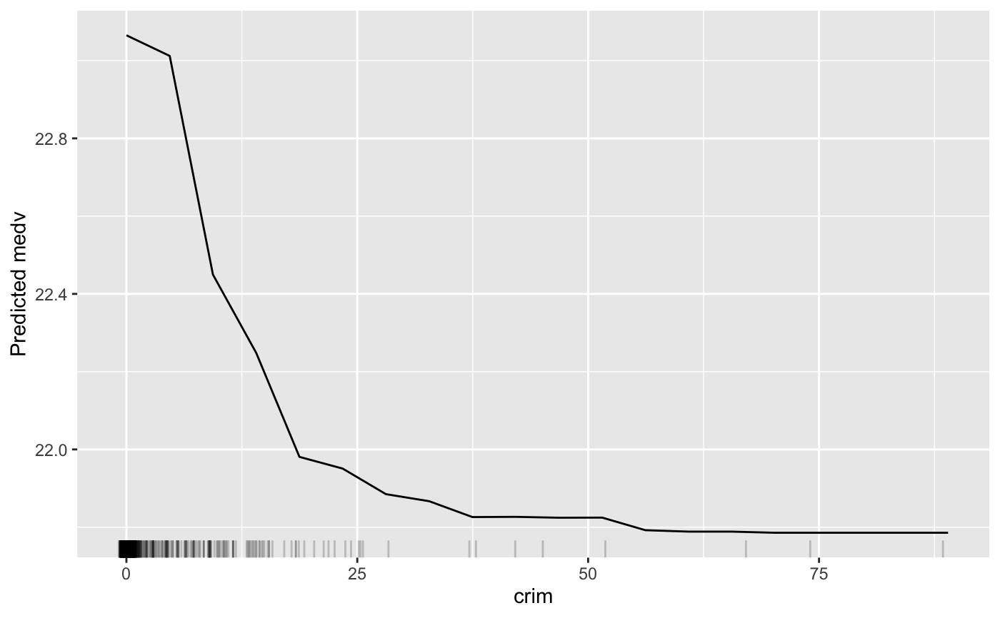
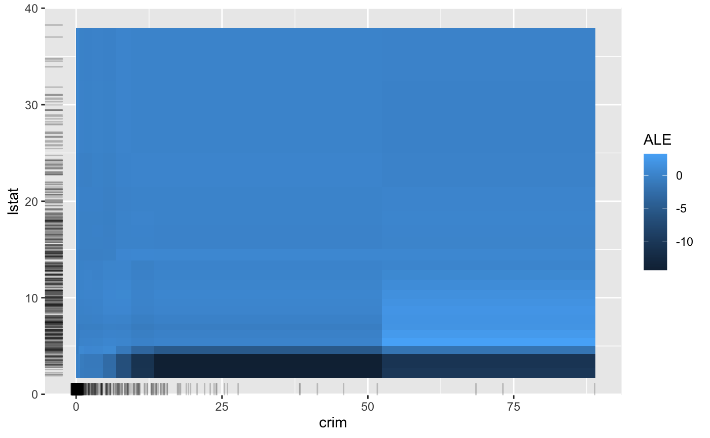
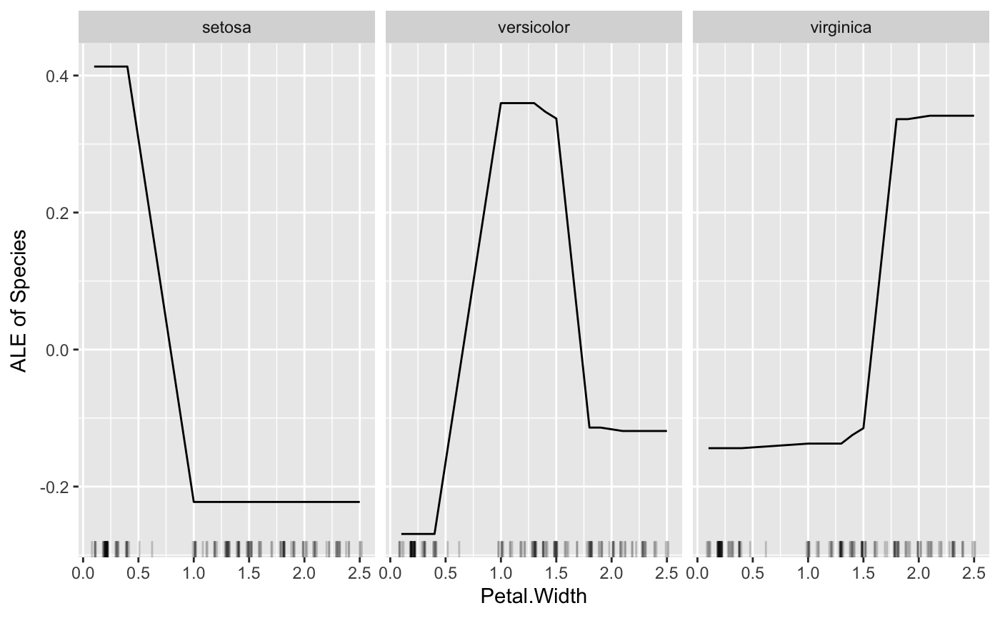
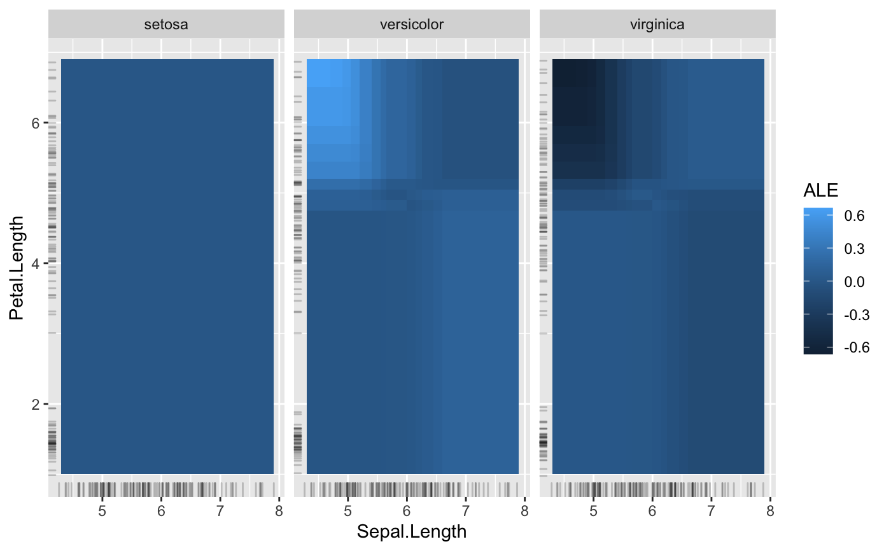
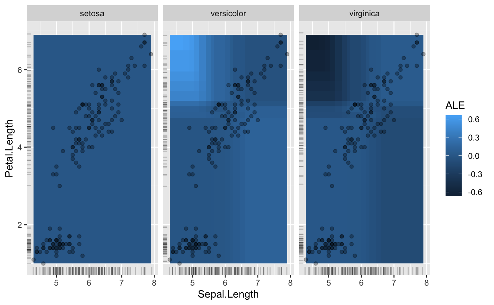
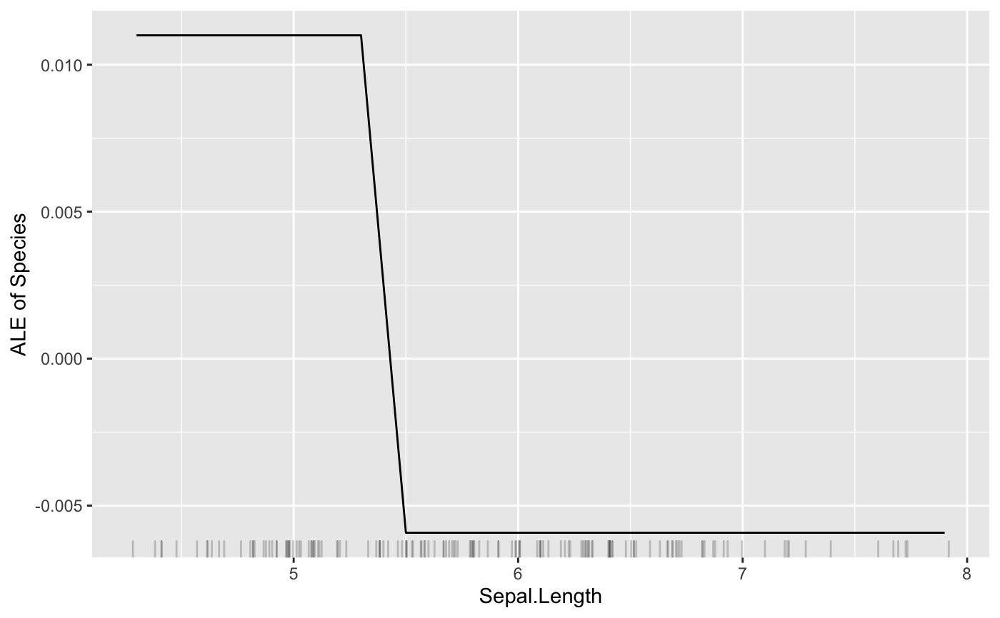

FeatureEffect computes and plots (individual) feature effects
of prediction models.
Details
The FeatureEffect class compute the effect a feature has on the prediction. Different methods are implemented:
Accumulated Local Effect (ALE) plots
Partial Dependence Plots (PDPs)
Individual Conditional Expectation (ICE) curves
Accumulated local effects and partial dependence plots both show the average model prediction over the feature. The difference is that ALE are computed as accumulated differences over the conditional distribution and partial dependence plots over the marginal distribution. ALE plots preferable to PDPs, because they are faster and unbiased when features are correlated.
ALE plots for categorical features are automatically ordered by the similarity of the categories based on the distribution of the other features for instances in a category. When the feature is an ordered factor, the ALE plot leaves the order as is.
Individual conditional expectation curves describe how, for a single observation, the prediction changes when the feature changes and can be combined with partial dependence plots.
To learn more about accumulated local effects, read the Interpretable Machine Learning book.
For the partial dependence plots: https://christophm.github.io/interpretable-ml-book/pdp.html
For individual conditional expectation: https://christophm.github.io/interpretable-ml-book/ice.html
References
Apley, D. W. 2016. "Visualizing the Effects of Predictor Variables in Black Box Supervised Learning Models." ArXiv Preprint.
Friedman, J.H. 2001. "Greedy Function Approximation: A Gradient Boosting Machine." Annals of Statistics 29: 1189-1232.
Goldstein, A., Kapelner, A., Bleich, J., and Pitkin, E. (2013). Peeking Inside the Black Box: Visualizing Statistical Learning with Plots of Individual Conditional Expectation, 1-22. https://doi.org/10.1080/10618600.2014.907095
See also
Super class
iml::InterpretationMethod -> FeatureEffect
Public fields
grid.size(numeric(1) | numeric(2))
The size of the grid.
feature.name(character(1) | character(2))
The names of the features for which the partial dependence was computed.
n.features(numeric(1))
The number of features (either 1 or 2).
feature.type(character(1) | character(2))
The detected types of the features, either "categorical" or "numerical".
methodActive bindings
center.atnumeric
Value at which the plot was centered. Ignored in the case of two
features.
Methods
Public methods
Inherited methods
Method new()
Create a FeatureEffect object
Usage
FeatureEffect$new( predictor, feature, method = "ale", center.at = NULL, grid.size = 20 )
Arguments
predictorPredictor
The object (created with Predictor$new()) holding the machine
learning model and the data.
feature(character(1) | character(2) | numeric(1) |
numeric(2))
The feature name or index for which to compute the effects.
method'ale' for accumulated local effects,
'pdp' for partial dependence plot,
'ice' for individual conditional expectation curves,
'pdp + ice' for partial dependence plot and ice curves within the same plot.
center.at(numeric(1))
Value at which the plot should be centered. Ignored in the case of two
features.
grid.size(numeric(1) | numeric(2))
The size of the grid for evaluating the predictions.
Method set.feature()
Get/set feature(s) (by index) for which to compute PDP.
Usage
FeatureEffect$set.feature(feature)
Arguments
feature(character(1))
Feature name.
Method center()
Set the value at which the ice computations are centered.
Usage
FeatureEffect$center(center.at)
Arguments
center.at(numeric(1))
Value at which the plot should be centered. Ignored in the case of two
features.
Method predict()
Predict the marginal outcome given a feature.
Usage
FeatureEffect$predict(data, extrapolate = FALSE)
Arguments
datadata.frame
Data.frame with the feature or a vector.
extrapolate(character(1))
If TRUE, predict returns NA for x values outside of observed range.
If FALSE, predcit returns the closest PDP value for x values outside the range.
Ignored for categorical features
Returns
Values of the effect curves at the given values.
Method clone()
The objects of this class are cloneable with this method.
Usage
FeatureEffect$clone(deep = FALSE)
Arguments
deepWhether to make a deep clone.
Examples
# We train a random forest on the Boston dataset: data("Boston", package = "MASS") library("randomForest")#>#>rf <- randomForest(medv ~ ., data = Boston, ntree = 50) mod <- Predictor$new(rf, data = Boston) # Compute the accumulated local effects for the first feature eff <- FeatureEffect$new(mod, feature = "rm", grid.size = 30) eff$plot()# Again, but this time with a partial dependence plot and ice curves eff <- FeatureEffect$new(mod, feature = "rm", method = "pdp+ice", grid.size = 30 ) plot(eff)#> #>#> #> #>plot(eff) + # Adds a title ggtitle("Partial dependence") + # Adds original predictions geom_point( data = Boston, aes(y = mod$predict(Boston)[[1]], x = rm), color = "pink", size = 0.5 )#> rm .value .type .id #> 1 3.561000 20.49615 pdp NA #> 2 3.740966 20.49615 pdp NA #> 3 3.920931 20.49615 pdp NA #> 4 4.100897 20.49615 pdp NA #> 5 4.280862 20.47063 pdp NA #> 6 4.460828 20.47006 pdp NA#> [1] 22.13121 21.40123 27.92405#> [1] 20.41243 20.63094 27.18993# Only plotting the aggregated partial dependence: eff <- FeatureEffect$new(mod, feature = "crim", method = "pdp") eff$plot()# Only plotting the individual conditional expectation: eff <- FeatureEffect$new(mod, feature = "crim", method = "ice") eff$plot()# Accumulated local effects and partial dependence plots support up to two # features: eff <- FeatureEffect$new(mod, feature = c("crim", "lstat"))#>plot(eff)# FeatureEffect plots also works with multiclass classification rf <- randomForest(Species ~ ., data = iris, ntree = 50) mod <- Predictor$new(rf, data = iris, type = "prob") # For some models we have to specify additional arguments for the predict # function plot(FeatureEffect$new(mod, feature = "Petal.Width"))# FeatureEffect plots support up to two features: eff <- FeatureEffect$new(mod, feature = c("Sepal.Length", "Petal.Length")) eff$plot()# For multiclass classification models, you can choose to only show one class: mod <- Predictor$new(rf, data = iris, type = "prob", class = 1) plot(FeatureEffect$new(mod, feature = "Sepal.Length"))